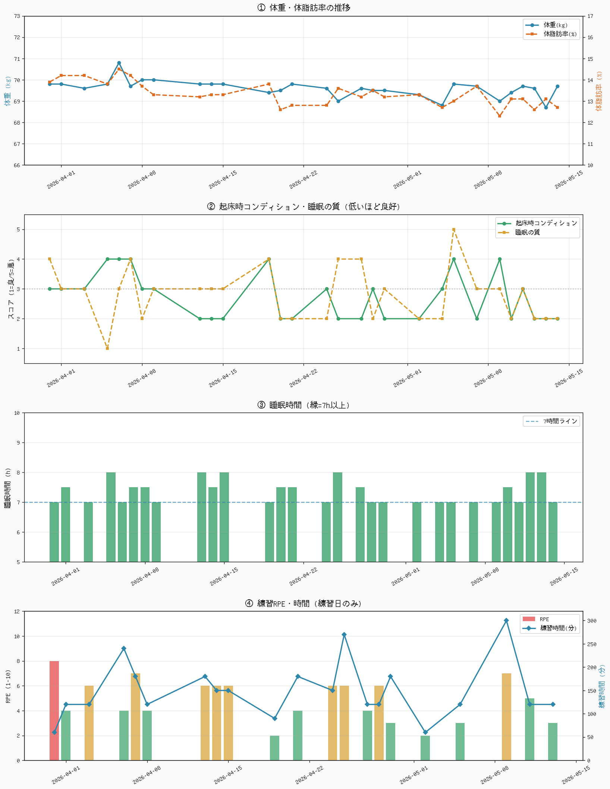
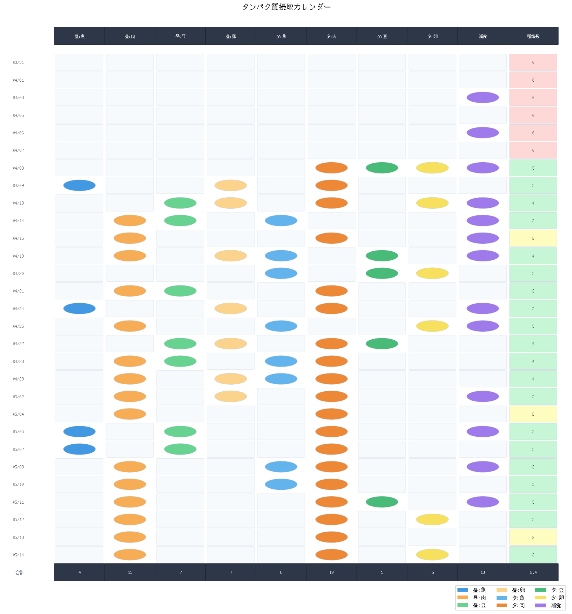
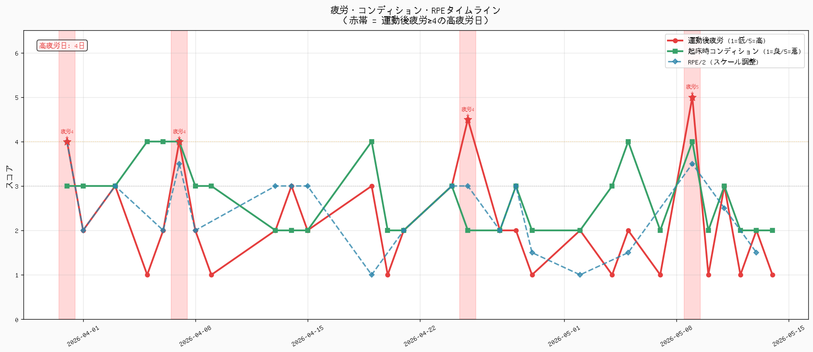
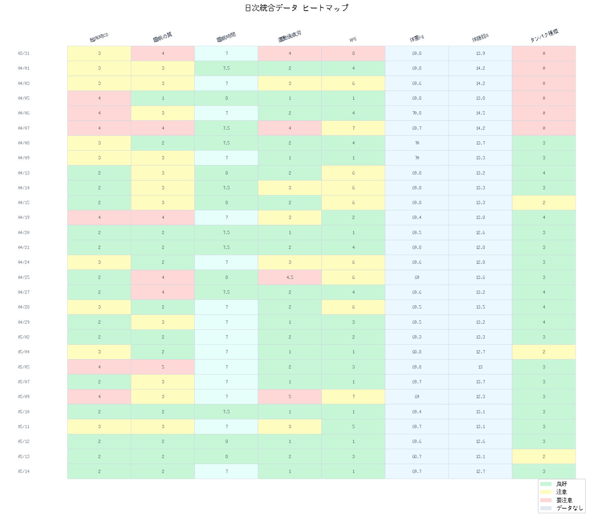
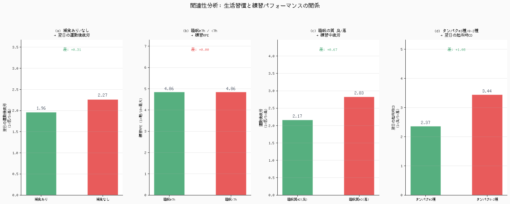

選手フィードバックレポート
2026.03.31 – 2026.05.14 ｜ 自動生成レポート
| 指標 | 今期間値 | 評価コメント |
|---|---|---|
| 総トレーニング日数（休養除く） | 21 日 | 計画的な練習量を維持できている |
| 総トレーニング時間（分） | 3150 分（約 52.5 時間） | 十分なトレーニングボリューム |
| 平均RPE（練習日のみ） | 4.9 / 10 | やや低強度 |
| 平均運動後疲労（練習日のみ）（1=低疲労/5=高疲労） | 2.64 | まずまず |
| 平均睡眠時間（h） | 7.34 h | 7時間以上確保できている |
| 平均睡眠の質（1=良/5=悪） | 2.79 | 普通レベル |
| 平均起床時コンディション（1=良/5=悪） | 2.72 | 普通レベル |
| 平均体重（kg） | 69.6 kg | 期初 69.8 kg → 期末 69.7 kg（-0.1 kg） |
| 体重変動幅（kg） | 2.1 kg | 体重変動がやや大きい |
| 体脂肪率 期初 → 期末 | 13.9% → 12.7%（-1.2%） | 体脂肪率が改善傾向 |
| 練習後補食「はい」の日数 | 13 日 / 29 日 | 補食の機会をもっと増やしたい |
| タンパク源の平均種類数 | 2.45 種類 / 日 | もう少し多様化を |
運動後疲労が4以上の高疲労日が計 4日
（03/31, 04/07, 04/25, 05/09）ありました。
起床時コンディションが4以上の日も 6日
（04/05, 04/06, 04/07, 04/19, 05/05, 05/09）観察されています。
高疲労日のうち補食なしの日は 03/31, 04/07 で、
回復栄養の不足が疲労蓄積に関係している可能性があります。
タンパク質摂取では 「昼:魚」が 4日と最も少なく、
特定食材への偏りが見られます。
睡眠の質が悪い日（≥3）の練習中疲労は平均 2.83（良い日: 2.17）と
高い傾向があります。
「練習後は必ず補食を行い、夕食で昼と異なる2種類以上のタンパク源を意識する」
練習後30分以内にプロテインまたはおにぎり＋卵等を摂取し、
今期間で最も少なかった「昼:魚（4日）」を週3回以上取り入れることを目標にしましょう。
補食あり→翌日疲労 1.96 vs なし→ 2.27 のデータからも、
補食の効果は数値として現れています。
まず2週間継続して変化を記録してください。
疲労・コンディション・睡眠の質は「1=良/5=悪」。RPEは「1=楽/10=最大」。
| 日付 | 種目 | 時間(分) | RPE | 爆発力 | 持久力 | 運動後疲労 | 体重(kg) | 起床時CD | 睡眠の質 | 睡眠時間 | 補食 | 栄養Bal |
|---|---|---|---|---|---|---|---|---|---|---|---|---|
| 03/31 | 実践トレーニング | 60 | 8 | 2 | 2 | 4 | 69.8 | 3 | 4 | 7 | いいえ | 3 |
| 04/01 | ウエイトトレーニング | 120 | 4 | 3 | 2 | 2 | 69.8 | 3 | 3 | 7.5 | いいえ | 3 |
| 04/03 | 実践トレーニング | 120 | 6 | 4 | 3 | 3 | 69.6 | 3 | 3 | 7 | はい | 4 |
| 04/05 | 休養日 | - | - | - | - | - | 69.8 | 4 | 1 | 8 | いいえ | 3 |
| 04/06 | 実践トレーニング | 240 | 4 | 2 | 3 | 2 | 70.8 | 4 | 3 | 7 | はい | 3 |
| 04/07 | 実践トレーニング | 180 | 7 | 2 | 2 | 4 | 69.7 | 4 | 4 | 7.5 | いいえ | 4 |
| 04/08 | ウエイトトレーニング | 120 | 4 | 2 | 2 | 2 | 70 | 3 | 2 | 7.5 | はい | 3 |
| 04/09 | 休養日 | - | - | - | - | - | 70 | 3 | 3 | 7 | いいえ | 4 |
| 04/13 | 実践トレーニング | 180 | 6 | 4 | 3 | 2 | 69.8 | 2 | 3 | 8 | はい | 3 |
| 04/14 | 実践トレーニング | 150 | 6 | 2 | 3 | 3 | 69.8 | 2 | 3 | 7.5 | はい | 4 |
| 04/15 | ウエイトトレーニング | 150 | 6 | 4 | 4 | 2 | 69.8 | 2 | 3 | 8 | はい | 3 |
| 04/19 | ウエイトトレーニング | 90 | 2 | 2 | 2 | 3 | 69.4 | 4 | 4 | 7 | はい | 4 |
| 04/20 | 休養日 | - | - | - | - | - | 69.5 | 2 | 2 | 7.5 | いいえ | 2 |
| 04/21 | 実践トレーニング | 180 | 4 | 4 | 3 | 2 | 69.8 | 2 | 2 | 7.5 | いいえ | 2 |
| 04/24 | 実践トレーニング | 150 | 6 | 2 | 3 | 3 | 69.6 | 3 | 2 | 7 | はい | 2 |
| 04/25 | 実践トレーニング/ウエイトトレーニング | 270 | 6 | 3 | 3.5 | 4.5 | 69 | 2 | 4 | 8 | はい | 3 |
| 04/27 | 実践トレーニング | 120 | 4 | 4 | 3 | 2 | 69.6 | 2 | 4 | 7.5 | いいえ | 4 |
| 04/28 | 実践トレーニング | 120 | 6 | 2 | 4 | 2 | 69.5 | 3 | 2 | 7 | いいえ | 2 |
| 04/29 | 実践トレーニング | 180 | 3 | 4 | 3 | 1 | 69.5 | 2 | 3 | 7 | いいえ | 3 |
| 05/02 | 実践トレーニング | 60 | 2 | 2 | 3 | 2 | 69.3 | 2 | 2 | 7 | はい | 4 |
| 05/04 | 休養日 | - | - | - | - | - | 68.8 | 3 | 2 | 7 | いいえ | 4 |
| 05/05 | 実践トレーニング | 120 | 3 | 3 | 3 | 2 | 69.8 | 4 | 5 | 7 | はい | 2 |
| 05/07 | 休養日 | - | - | - | - | - | 69.7 | 2 | 3 | 7 | いいえ | 2 |
| 05/09 | 実践トレーニング/ウエイトトレーニング | 300 | 7 | 3.5 | 2.5 | 5 | 69 | 4 | 3 | 7 | はい | 2 |
| 05/10 | 休養日 | - | - | - | - | - | 69.4 | 2 | 2 | 7.5 | いいえ | 2 |
| 05/11 | 実践トレーニング | 120 | 5 | 4 | 3 | 3 | 69.7 | 3 | 3 | 7 | はい | 4 |
| 05/12 | 休養日 | - | - | - | - | - | 69.6 | 2 | 2 | 8 | いいえ | 2 |
| 05/13 | ウエイトトレーニング | 120 | 3 | 4 | 3 | 2 | 68.7 | 2 | 2 | 8 | いいえ | 2 |
| 05/14 | 休養日 | - | - | - | - | - | 69.7 | 2 | 2 | 7 | いいえ | 3 |


「昼:魚」が 4日と最も少ない。 次いで「夕:豆」(5日)。 バランス良く摂取するよう意識しましょう。
「夕:肉」が 19日と最もよく摂取できています。 この習慣を継続しながら他の食材も取り入れましょう。
タンパク質源の記録が0の日が 6日 (03/31, 04/01, 04/03, 04/05, 04/06, 04/07)。 記録漏れか摂取増加が必要。
補食実施 13日 / 29日（45%）。 補食あり→翌日疲労 1.96 / 補食なし→ 2.27。 補食の効果がデータに現れています。



| 比較条件 | 対象指標 | グループA（良好） | グループB（悪） | 差（A−B） | 解釈 |
|---|---|---|---|---|---|
| 補食あり vs 補食なし | 翌日の運動後疲労（低いほど良） | 1.96 | 2.27 | -0.31 | 補食ありの方が翌日の疲労が低い傾向 |
| 睡眠≥7h vs ＜7h | 練習RPE（高いほど良） | 4.86 | データなし（全日7h以上） | — | 今期間は全日7h以上の睡眠が確保できています。引き続き維持しましょう。 |
| 睡眠の質≤2（良）vs ≥3（悪） | 練習中疲労（低いほど良） | 2.17 | 2.83 | -0.67 | 睡眠の質が良いと練習中の疲労が低い傾向 |
| タンパク≥3種 vs 0-2種 | 翌日の起床時CD（低いほど良） | 2.37 | 3.44 | -1.08 | 多様なタンパク源が翌朝のコンディション向上に関連 |
練習後の補食は筋グリコーゲン回復を促進します。 補食あり: 1.96 vs なし: 2.27（疲労スコア、低=良）。 差 0.31で補食の効果が示唆されます。
7時間以上の睡眠でRPE=4.86。今期間は全日7時間以上確保できているため比較データなし。 睡眠7h以上を今後も維持しましょう。 現在の平均睡眠 7.3h は 良好です。
睡眠質良好（≤2）の疲労=2.17、悪い（≥3）= 2.83。 睡眠の質が練習疲労に影響しています。 就寝前のルーティン統一（入浴・スマホオフ等）を推奨します。
タンパク3種以上の翌朝CD=2.37、0-2種=3.44（低=良）。 多様なアミノ酸が回復に寄与している可能性。 最も少ない「昼:魚」の摂取増加が効果的かもしれません。
① よかった点
今期間を通じて運動後疲労の平均 2.6（5段階）と概ね良好な疲労管理ができていました。 特に調子の良かった日（04/13, 04/15, 04/20, 04/21, 04/27, 04/29）は、 起床時コンディション・運動後疲労ともに1〜2の良好な状態を維持できています。
補食実施日の翌日疲労は平均 1.96（補食なし: 2.27）と 補食の効果がデータに現れています。 睡眠時間は平均 7.3h 確保でき、 体脂肪率も 13.9% → 12.7% と改善傾向しています。 多様なタンパク源（3種以上）を摂った日の翌朝コンディションは 2.37（少ない日: 3.44）と より良好な傾向です。